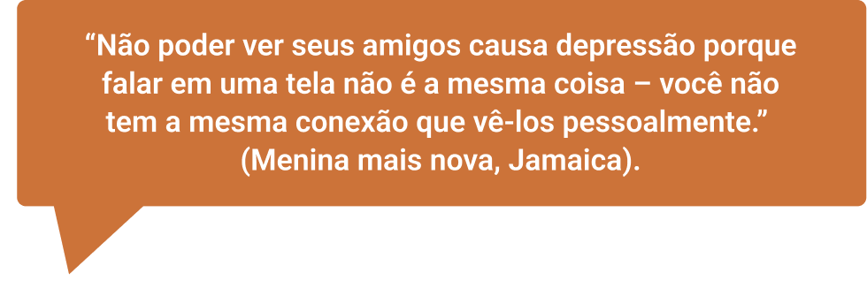

Sobre as autoras

Neidy Marcia de Souza Silva
Graduação em Serviço Social pela Universidade Federal do Rio de Janeiro (1985) e Mestrado em Serviço Social pela Universidade do Estado do Rio de Janeiro (2007). Assistente Social da Universidade do Estado do Rio de Janeiro e da Prefeitura da Cidade do Rio de Janeiro (aposentada), com ênfase de intervenção no campo da Saúde, Assistência Social e gestão em órgãos de controle social na área da criança e do adolescente, atuando principalmente no seguinte tema: Saúde do Adolescente. Atualmente, é Assistente Social do Núcleo de Estudos da Saúde do Adolescente, realizando atendimento com abordagem interdisciplinar e interinstitucional a adolescentes e famílias nas ações de atenção à saúde e participando em programas e projetos de garantia de direitos de adolescentes e jovens. Realiza preceptoria a alunos da faculdade de Serviço Social da UERJ e residentes do curso de Especialização Lato Sensu em Serviço Social e Saúde.
Helena Ferraz Gomes
Formada em Bacharelado e Licenciatura em Enfermagem pela Faculdade de Enfermagem da Universidade Federal de Juiz de Fora em 2009. Especialista em Saúde Coletiva, sob moldes de residência em enfermagem pela UNIRIO/UFF (2010-2012). Doutora e Mestre em Enfermagem pela Faculdade de Enfermagem da Universidade do Estado do Rio de Janeiro. Docente: Professora Adjunta da Faculdade de Enfermagem da Universidade do Estado do Rio de Janeiro - Departamento de Enfermagem Médico-Cirúrgica (DEMC) - Área Clínica. Atuação Teórico-Prática em Enfermagem Clínica com enfoque na Saúde do Adolescente. Experiência Profissional nas seguintes áreas: Enfermagem Clínica, Saúde do Adolescente e Saúde Coletiva. Realiza pesquisas nas seguintes áreas: Saúde do Trabalhador, Saúde do Adolescente e Terapia Infusional. Atua na Coordenação do Programa de Residência de Enfermagem em Saúde do Adolescente da Faculdade de Enfermagem da UERJ.
Anália da Silva Barbosa
Graduada em Serviço Social pela Universidade Federal Fluminense, Mestre em Serviço Social pelo Programa de Pós-Graduação em Serviço Social da Escola de Serviço Social da Universidade Federal do Rio de Janeiro (PPGSS/ESS/UFRJ) e Doutoranda do Programa de Políticas Públicas e Formação Humana da Universidade do Estado do Rio de Janeiro (PPFH/UERJ). Preceptora e Docente da Residência Multiprofissional em Saúde Mental da UERJ. Atualmente é Coordenadora do Centro de Atenção Psicossocial da UERJ e presta assessoria para Entidade Filantrópica do Terceiro Setor (Instituto Santa Lúcia) na área da política de assistência social, criança e adolescente e saúde mental.
Coordenação acadêmica - Eloísa Grossman
Graduação em Medicina pela Universidade do Estado do Rio de Janeiro (1982). Mestrado (1995) e Doutorado (2006) em Saúde da Criança e da Mulher pela Fundação Oswaldo Cruz. MBA em Administração em Saúde pela UFRJ (2000). Professora Associada do Departamento de Pediatria da Faculdade de Ciências Médicas (FCM) da UERJ, onde exerceu o cargo de Coordenadora de Graduação entre 2016 e 2019. Docente do Mestrado Profissional em Saúde da Família - PROFSAUDE/ UERJ. Coordenou o Projeto de Educação a distância do Núcleo de Estudos da Saúde do Adolescente (NESA/ UERJ), apoiado pela Organização Pan-Americana da Saúde (módulos de auto-aprendizagem e curso virtual Introdução à Saúde Integral de Adolescentes e Jovens). Participou da Comissão Assessora do Enade (2019). Atualmente é professora da Disciplina de Medicina de Adolescentes e coordenadora da Disciplina Integradora Competência Narrativa na Prática Médica da FCM/UERJ. Está concluindo o curso de Especialização Lato Sensu em “Formação do Escritor” (PUC/RJ).
Coordenação Pedagógica - Ewângela Aparecida Pereira
Pedagoga, graduada pela Universidade Federal de Mato Grosso do Sul. Especialista em Gestão e Vigilância em Saúde Pública pelo Centro Universitário de Campo Grande (UNAES) e em Educação em Saúde para preceptores do SUS pelo Hospital Sírio Libanês. Mestre em Educação pela Universidade Federal de Mato Grosso do Sul. Desde 2002 atua na Escola Técnica do SUS Professora Ena de Araújo Galvão, da Secretaria de Estado de Saúde de Mato Grosso do Sul, no cargo de Analista de Desenvolvimento Profissional. É Gerente de Assessoramento Pedagógico, responsável pelo setor pedagógico da Escola, há mais de 15 anos atuando com formação em Educação Profissional em Saúde principalmente com cursos técnicos e de formação profissional inicial. Foi Coordenadora Pedagógica do módulo V do Programa Educacional em Vigilância e Cuidado em Saúde no Enfrentamento da Covid-19 de outras Doenças e Síndromes Virais- VigiEpidemia.
Módulo: Cuidados psicossociais nas adolescências e juventudes

SOBRE O MODULO
Cuidados psicossociais nas adolescências e juventudes
Carga horaria: 30 horas
OBJETIVOS DE APRENDIZAGEM
Subsidiar a oferta dos primeiros cuidados psicológicos, presencial e remoto, identificando as necessidades psicossociais dos adolescentes e jovens.
Conteúdo
- Primeiros Cuidados Psicológicos e urgência em Saúde Mental;
- Estratégias de cuidado, técnicas e apoio psicossocial (presencial e remoto);
- Acolhimento de adolescentes e jovens em diferentes espaços e para diferentes necessidades;
- Manejo de situações de crise na área da saúde mental para adolescentes e jovens;
- Sinais de alerta e fatores de risco para: Ideação Suicida, Automutilação, Risco de Suicídio e Referenciamento;
- Identificação dos indicadores de sofrimento “normal”, “complicado” e indicadores de encaminhamento para casos graves;
- Notificações compulsórias;
- Projetos de vida e outras estratégias positivas;
- Comunicação não violenta: conceito, prática e ferramentas;
- Ações e projetos de fortalecimento de vínculos com as famílias e responsáveis pelos adolescentes e jovens;
- Pode Falar: canal de ajuda em saúde mental da Unicef para adolescentes e jovens.
Conhecimentos
- Conhecer os primeiros cuidados psicológicos e urgência em saúde mental;
- Identificar técnicas e estratégias iniciais de estabilização emocional (primeiros cuidados psicológicos) e manejo de crise;
- Conhecer as situações e tipos de crise existentes na área da saúde mental que acometem adolescentes e jovens;
- Reconhecer as características de uma ideação suicida em adolescentes e jovens;
- Diferenciar comportamento suicida de ideação suicida;
- Conhecer estratégias que potencializem de forma positiva o desenvolvimento de adolescentes e jovens;
- Conhecer ações e projetos que estimulem o fortalecimento de vínculos com as famílias e responsáveis pelos adolescentes e jovens, e outros que sejam espaços de comunicação e apoio para este segmento.
Habilidades
- Aplicar estratégias de cuidado para adolescentes e jovens, sobretudo em situações de crise;
- Utilizar técnicas e prestar apoio psicossocial presencial ou a distância;
- Realizar manejo de situações de crise e urgência em saúde mental entre adolescentes e jovens;
- Recomendar os serviços de saúde ou de proteção social, adolescentes e jovens com risco de suicídio.
Olá! Seja bem-vindo a mais uma etapa dessa jornada! Nessa nova parada, nosso objetivo é ajudar você a identificar as necessidades psicossociais de crianças e adolescentes que estão em situação de sofrimento e realizar os primeiros socorros psicológicos. Talvez, no seu dia a dia, você se depare com muitas Anas e com certeza já se perguntou o que pode fazer para ajudá-las, tanto de forma presencial quanto remota. Assim como no caso apresentado, nesse momento, aí próximo a você, existem muitas crianças e jovens vivenciando sofrimentos psíquicos que se manifestam em comportamentos que colocam a vida deles em risco, como: uso abusivo de drogas, bulimia, anorexia, automutilação e tentativas de suicídio. Neste módulo, enfatizaremos os dois últimos. Talvez, você tenha muitas dúvidas e até se sinta incapaz e paralisado, sem saber o que fazer diante de tantos casos. E agora? O que fazer?
É possível que você acredite que apenas profissionais de saúde mental, como psicólogos e psiquiatras, possam ajudar um jovem nessa situação. É provável também que você sinta que tenha que encaminhar esse “problema” o mais rápido possível, transferindo a responsabilidade para os serviços de saúde. Mas calma! Neste módulo, veremos que identificar as necessidades dos jovens e oferecer os primeiros socorros psicológicos são papéis que podem ser exercidos por qualquer pessoa, desde que ela esteja disposta a acolher e a escutar a criança e o adolescente. Como vimos no caso, Ana teve comportamentos que colocaram sua vida em risco, os quais só foram expostos para pessoas da sua escola.
Entretanto, na história de Ana, uma coordenadora pedagógica da escola soube como acolhê-la, ou seja, teve uma escuta sensível e comprometida para o que se passava naquele momento, fornecendo os primeiros cuidados, indispensáveis para circunstâncias como essa. Venha conosco e vamos aprender um pouco sobre como você também pode ajudar os jovens da sua comunidade!
QUANDO O SOFRIMENTO BATE À PORTA
QUANDO O SOFRIMENTO BATE À PORTA
O campo da saúde mental, amparado nos fundamentos do Sistema Único de Saúde (SUS), produz uma nova forma de lidar com o sofrimento psíquico: os cuidados voltados para as pessoas com sintomas psicológicos não se restringem às equipes de saúde mental, mas se ampliam para outros profissionais, além dos familiares e comunidade.
Serviços que acolham o público infantil e jovem seguem premissas semelhantes e devem levar em consideração as particularidades dessas etapas da vida, que não são poucas.
Veremos a seguir que não existe uma abordagem única para tratar dos impasses das crianças e dos jovens, assim como não há uma boa abordagem sem um cuidado integral de saúde, ou seja, sem um olhar mais ampliado que inclua os aspectos sociais, culturais, políticos, entre outros.
Essa visão mais ampliada deve alcançar, por exemplo, a bagagem histórica trazida pelas crianças e pelos adolescentes, e essa não é uma tarefa exclusiva dos profissionais de saúde, podendo ser exercitada por todas as pessoas que lidam e convivem com esse público, sendo atores fundamentais para a garantia de acolhimento, cuidado e encaminhamento para os tratamentos especializados. Com essa escuta, profissionais e demais pessoas que atuam com os jovens podem promover o autoconhecimento e ajudá-los na construção de saídas saudáveis para os impasses e riscos que porventura se apresentem.
Portanto, inicialmente, é preciso compreender que a saúde engloba o bem-estar físico, psíquico e emocional, não sendo apenas a ausência de doenças. Para isso, faremos algumas conceituações importantes e, em seguida, refletiremos sobre vários aspectos da saúde: desde os primeiros cuidados na urgência dessas crianças e adolescentes até as possibilidades de construções de saídas coletivas para esses casos que serão abordados nas circunstâncias de crise e urgência.
CRISE, AUTOMUTILAÇÃO E SUICÍDIO: DEFINIÇÃO E ENTRELAÇAMENTO DESSES CONCEITOS
Conviver com os amigos, o primeiro beijo, a primeira experiência sexual, entre outras experiências são momentos muito importantes na vida de um adolescente. Geralmente, essas experiências costumam acontecer na escola ou no grupo de amigos que estudam juntos ou moram próximos. Você se lembra das suas experiências nesse período?
Para as crianças e adolescentes, além de ser um local de aprendizagem de conteúdos e conceitos, a escola também é um espaço que contribui para a socialização e promoção da cidadania. Quando a família é ausente ou disfuncional, a escola serve como local de refúgio e apoio, longe das dificuldades familiares. Além dela, outros lugares, como centros de convivência, praças e espaços de lazer, instituições religiosas, entre outros, são espaços ocupados pelos jovens, onde aprendem a ser e a conviver.
Nos últimos anos, esse cenário foi inesperadamente alterado. Como uma espécie de pesadelo ou história de terror, a pandemia de Covid-19 gerou insegurança, medo, angústias e muitas mortes. As medidas de distanciamento social tiraram dos jovens as experiências de convivência com amigos e sociedade em geral e aumentaram o tempo de convivência com a família, suscitando as dificuldades inerentes a essa convivência (Da Mata et al., 2021). O distanciamento social também gerou outros desafios, como: a incerteza quanto ao futuro, à doença e à morte; dificuldades acadêmicas e de adaptação ao estudo on-line; problemas financeiros; e insegurança alimentar.
Além disso, a mudança repentina do ensino presencial para o ensino remoto, sem o preparo e as condições adequadas, somada à longa duração da pandemia, fez com que as crianças e os adolescentes entrassem em grande sofrimento.
Observe, a seguir, algumas falas de crianças e adolescentes de alguns países da América Latina sobre esse período (Unicef, 2021):
Fonte: Unicef (2021).
Disponível em:
https://www.unicef.org/media/108126/file/SOWC-2021-Latin-America-and-the-Caribbean-regional-brief.pdf.
Acesso em: 10 nov. 2022.
Antes mesmo da pandemia de Covid-19, a saúde mental dos jovens já vinha chamando a atenção e gerando preocupações. De acordo com o relatório Situação Mundial da Infância 2021 (UNICEF, 2021), quase um em cada seis meninas e meninos entre 10 e 19 anos de idade, no Brasil, tem algum transtorno mental. Nessa idade, esse grupo está mais exposto ao risco de automutilações, depressão e suicídio. Conforme Botega (2023), em cada 100 habitantes, 17 têm ideação suicida, com pensamentos de acabar com a própria vida, 5 chegam a elaborar um plano suicida, 3 tentam o suicídio e apenas 1 entre esses três é atendido em um pronto-socorro. Esses dados são preocupantes, pois revelam que o número de pessoas que precisam da nossa ajuda é muito maior do que aqueles que chegam até os serviços de saúde. Ou seja, a coisa está feia! E, por isso, precisamos de todos envolvidos no enfrentamento desse desafio.
Identificar sinais precoces de sofrimento psíquico, no contexto de vida da criança e do adolescente, pode impedir a escalada da crise, bem como possibilitar o início do cuidado necessário o mais precocemente possível, protegendo a saúde do jovem e potencializando os cuidados o mais rápido possível. Como vimos no caso de Ana, é muito importante refletirmos sobre como podemos fornecer os primeiros cuidados psicológicos em momentos de crise, quando as crianças e os adolescentes estão colocando suas vidas em risco, principalmente com comportamentos de automutilação e tentativas de suicídio.
Uma primeira forma é a observação durante a convivência. Nesse contexto, você pode identificar alguns sinais e mudanças no comportamento da criança ou adolescente, como retraimento, tristeza e irritabilidade. Outra importante estratégia para identificar pistas é acompanhar as redes sociais dos jovens, um canal de comunicação muito utilizado por eles. Uma matéria do site BBC (2019) revela a história de uma jovem norueguesa que, ao perder a melhor amiga por suicídio, passou a observar posts que poderiam ser indicativos de sofrimento mental e ideação suicida. Segundo ela:
“Vejo muitas pessoas que querem morrer. Não vou apenas ficar vendo uma pessoa dizer que vai se matar, ignorar isso e esperar pelo melhor”.
No Brasil, um funkeiro levantou suspeitas de sofrimento ao colocar uma foto pessoal que mostrava uma corda e a legenda: “Aprecie a vida, cada momento!”, deixando internautas e fãs preocupados.
Uma influencer digital, que enfrentava um quadro grave de depressão e ansiedade e efetivou o suicídio, chegou a postar nas redes sociais: “Entendam, ter depressão é ter que sair da cama sem vontade, e ter que lutar por coisas que não fazem mais sentido para você. Porque expor aqui? Simples. Pra que todos entendam que a vida do insta só mostra uma camada, e tenho certeza que tem muitaaaaaa gente aqui passando por isso”.
Como você viu anteriormente, o suicídio é um problema social que existe há muitos séculos, inclusive atingindo crianças e adolescentes, mas habitualmente era abordado de uma forma silenciosa, tímida e delicada, tanto pelo tabu que envolve o assunto, quanto pelo constrangimento causado em familiares que perderam alguém por suicídio. Hoje, por ser um indicador em constante crescimento, tornou-se um grande problema de saúde pública, sendo necessário conversar sobre o assunto em todos os espaços possíveis e com a ajuda de todas as áreas do conhecimento.
Segundo a Organização Mundial da Saúde (OMS) (World Health Organization, 2021), morrem, anualmente, no mundo, 700 mil pessoas por suicídio. Essa é a quarta maior causa de morte de adolescentes de 15 a 29 anos e tem crescido exponencialmente em menores de 14 anos, indicador em que Ana está enquadrada. Cabe destacar que o suicídio é um fenômeno complexo e multifatorial que pode afetar indivíduos de diferentes origens, faixas etárias, condições socioeconômicas, orientações sexuais e identidades de gênero. Assim, ele atinge todos os grupos, tornando-se um desafio ainda mais complexo. Contudo, como podemos definir o suicídio? Ele tem relação com a automutilação?
Vamos tentar entender, até para podermos chegar às possibilidades de intervenção quando nos deparamos com essas situações.
O suicídio pode ser definido “como um ato deliberado executado pelo próprio indivíduo, cuja intenção é a morte, de forma consciente e intencional, mesmo que ambivalente, usando um meio que ele acredite ser letal” (LOPES, 2022, p. 296-297). Geralmente, o suicídio é visto como uma maneira de acabar com a dor. Ocorre uma espécie de restrição mental em que a pessoa enxerga o suicídio como a única forma de resolver a situação, de acabar com o sofrimento que ela está vivenciando (Botega, 2023). Há níveis relacionados ao suicídio, que vão desde a existência de ideias sobre o ato, como pensamentos de morrer, até planos muito elaborados de tirar a própria vida. No Quadro 1, há uma descrição de cada nível (Botega, 2023) e a definição de automutilação (Aratangy, 2017).
Quadro 1 - Níveis de ideação e comportamento de autoextermínio
Já os comportamentos autolesivos, também conhecidos como automutilação, envolvem machucar partes do corpo de forma intencional, mas não têm o intuito de causar dano letal.
Leves
Quando as lesões são realizadas com pouca frequência e têm baixa gravidade
Moderados
Quando as lesões são graves a ponto de a pessoa precisar de ajuda médica
Graves
Quando as lesões são feitas com frequência e têm maior gravidade, causando prejuízos às pessoas, como os machucados no corpo e o isolamento dos grupos de pertença
As autolesões geralmente têm impacto negativo na saúde mental do próprio indivíduo e envolvem: punir-se por algo que acredita ter feito de errado e regular as emoções intensas e geralmente desagradáveis. A pessoa faz isso tanto porque, após se cortar, sente um alívio, uma sensação de anestesia, como porque a dor desvia o foco das emoções desagradáveis. As autolesões também têm um impacto nas relações interpessoais, ou seja, as outras pessoas se preocupam e dão mais atenção, portanto pode trazer um senso de pertencimento. Existem grupos e comunidades que se relacionam justamente por compartilharem esses temas, como as adolescentes que Ana encontrou na internet (Quesada et al., 2020).
As situações descritas configuram o auge do sofrimento. No entanto, como perceber que a criança ou o adolescente precisa de ajuda? Como diferenciar comportamentos típicos dessa fase de situações de crise? Como a palavra crise é muito utilizada no contexto da adolescência, é necessário esclarecer que questões pontuais e certos comportamentos típicos desse momento de vida não devem ser confundidos com situações de crise, tampouco com doenças. De acordo com alguns estudos sobre a adolescência, alguns comportamentos e características dessa etapa da vida são: insegurança, busca de sensações, impulsividade e agressividade, que seriam consequências das mudanças biológicas e hormonais que acontecem nesse momento da vida (GOMES, 2017). Em outras palavras, a adolescência é uma fase em que ocorrem muitas mudanças, o que nem sempre é vivido sem conflitos.
Contudo, a palavra crise é muito utilizada na área da saúde, especialmente para designar situações de intenso sofrimento e de gravidade significativa (ALKMIM, 2010). As mudanças abruptas de comportamento decorrentes de sofrimento ou prejuízo ajudam a entender melhor essa comparação, como: um adolescente que sempre ficou irritado em determinadas situações passa a ter comportamentos de raiva e agressividade mais intensamente, ameaçando machucar os colegas, animais e a si próprio. Essa mudança pode ser um sinal de que esse adolescente está em crise. Assim, o próprio jovem é usado como parâmetro de comparação, ou seja, é preciso conhecer a história dele para identificar quando as mudanças ocorreram e em qual intensidade.
Podemos sugerir como indicadores “normais” as mudanças de comportamento, o aparecimento da tristeza, a queda no rendimento escolar, entre outros. No que se refere ao suicídio, um risco baixo envolve ausência de tentativa anteriores e, caso ocorram ideias desse tipo, elas são passageiras e geram ansiedade, perturbação. Além disso, se há um transtorno mental prévio, os sintomas são leves e o jovem tem vida e apoio social (Botega, 2023). A música Eu sou um fracasso, de Bia Marques, mostra o início de uma crise, a sensação de estar só e de ser um fracasso, assim como a desesperança de ser compreendida. Por outro lado, cita lembranças de bons momentos, bem como alguma rede de apoio: “Mas pelo menos sei que com você posso contar”.
Com relação aos indicadores médios, “complicados”, é preciso observar se os pensamentos negativos são persistentes, mesmo que não envolvam a intenção de tirar a própria vida ou machucar alguém, se as autoagressões estão presentes e com qual frequência e gravidade, se tem algum histórico de tentativa de tirar a própria vida, se há isolamento, piora no rendimento escolar e falas de desesperança. Quanto ao risco de suicídio, é moderado se há diagnóstico de depressão ou transtorno bipolar, se os pensamentos de suicídio são frequentes, se o suicídio parece ser a solução e se a pessoa conta ou não com apoio social. Em um risco moderado de suicídio, a pessoa não é impulsiva, não faz uso ou abuso de drogas e não tem um plano para se matar (Botega, 2023). A música RAP - me sinto perdido, nossos sentimentos retrata um nível um pouco mais intenso de sofrimento: “não faz sentido a vida que eu carrego”; “não sei mais se eu vivo por mim mesmo”; “parece que estou perdido nesse mundo sem saída, onde a única opção é uma escolha suicida”. Nela, encontramos alguns indícios de já ter havido uma tentativa anterior de suicídio: “me olhando no espelho meu passado me atormenta. O porquê eu fiz aquilo? Talvez ninguém entenda”. Apesar da suposta tentativa de suicídio anterior e de a pessoa considerar o suicídio como uma opção real e como a solução, identifica-se uma rede de apoio: “Agradeço aos amigos por estarem ao meu lado”, e a ambivalência, indicando, além do desejo de morrer, uma esperança para viver.
Músicas, como a citada acima, falam de desesperança, ideação suicida, sentimentos de vazio e temas afins.
Apesar de serem impactantes, elas também podem ajudar a nos aproximar da dor de nossas crianças e adolescentes para que possamos compreender como eles se sentem. Além disso, as músicas podem ser usadas para suscitar discussões sobre suicídio com os adolescentes, especialmente os que representam nível baixo e moderado de ideação.
Como indicadores altos, ou “casos graves”, devem ser verificadas a existência de tentativas anteriores de suicídio e a dependência de álcool ou de outras drogas. Nesse cenário, o jovem em crise não vê saídas. Há um plano definido de se matar e ele já pensou em formas de fazer isso, além de já ter providenciado o que precisa para o ato (Botega, 2023).
Frases que podem sinalizar pensamentos suicidas
“Quero acabar com o sofrimento”.
“Vou deixar de ser um problema para minha família ou meus amigos”.
“Eu ando pensando besteira”.
“Acho que minha família ficaria melhor se eu não estivesse aqui”.
“Eu sou um peso para os outros”.
“Estou com pensamentos ruins”.
“Eu não aguento mais”.
“As coisas não vão dar certo. Não vejo saída”.
“As pessoas acham que depressão é frescura. Depois que a pessoa se mata vão ver o que é frescura”.
De acordo com Franzin, Reis e Neufeld (2017), o que costuma desencadear uma crise na infância e na adolescência são problemas na família, na escola ou piora de uma psicopatologia já existente, como depressão. A seguir serão listados alguns sinais que podem indicar que o adolescente está em crise, sempre levando em consideração como ele era habitualmente, como está agora e a frequência e intensidade dos comportamentos:
- Comportamento agressivo e violento, como quebrar ou jogar coisas, gritar, xingar ou desafiar adultos;
- Tentativa de suicídio, tomando remédios, jogando-se de lugares altos, enforcando-se, usando arma de fogo ou de outras maneiras;
- Machucar a si mesmo se beliscando, cortando-se, batendo em si mesmo;
- Desenvolver depressão e transtornos de ansiedade;
- Começar a usar álcool, cigarro ou outras drogas em excesso;
- Desregulação emocional, ou seja, choro difícil de controlar ou ficar irritado com facilidade e com frequência, assim como falta de paciência.
No caso de Ana, o sentimento de culpa pela morte do pai, a falta que sentia dele, a baixa autoestima, o desconforto que sentia em casa pela presença do padrasto, a falta de opções de lazer, o afastamento da amiga Karen e as críticas da mãe foram fazendo com que ela ficasse cada vez mais distante, sentindo-se ainda mais sozinha.
Ana começou a ficar muito irritada, sem paciência (a irritabilidade frequente e intensa é um sintoma importante de depressão em crianças e adolescentes), passou a não dormir bem, perdeu a vontade de comer e deixou de fazer coisas de que gostava antes, como fazer vídeos e postar no TikTok.
Como destacado anteriormente, a mãe de Ana percebeu as mudanças do comportamento da adolescente e pensou que fosse coisa da adolescência ou “aborrescência”, termo muito utilizado, no senso comum, para se referir a essa fase da vida. Essa nomeação é carregada de estereótipos, pois considera que os adolescentes sempre aborrecem ou têm comportamentos equivocados. Esses estereótipos colaboram para calar as crianças e os adolescentes, principalmente nas horas em que eles mais precisam, sendo, portanto, negligenciados, silenciados ou esquecidos.
Fique de olho: sinais de alerta e fatores de risco para automutilação e ideação/tentativa de suicídio
A depressão é um importante fator de risco tanto para a automutilação quanto para o suicídio. Reconhecer que a criança ou o adolescente está em um quadro depressivo é importante para fornecer suporte e fazer os encaminhamentos necessários. O vídeo Um cachorro preto chamado depressão ilustra os sintomas do transtorno. Entre os jovens, em vez de tristeza, pode aparecer com maior frequência a irritabilidade, como no caso de Ana. Entre crianças de 6 a 8 anos, é comum queixas somáticas, como dor de cabeça e dor de barriga. Em adolescentes, as notas na escola podem cair e haver mais fome e sono (AMERICAN PSYCHIATRIC ASSOCIATION, 2014).
Aratangy (2017) explica que transtornos mentais (como depressão e presença de um trauma), vivências difíceis na infância, características pessoais e aspectos sociais são fatores de risco para automutilação e ideação suicida. Com relação aos aspectos sociais, é preciso prestar atenção: se a criança ou o adolescente está se isolando em demasia, tanto da família como de amigos; se está sofrendo bullying (ver módulo 3); se tem em seu histórico de navegação na internet busca de informações sobre automutilação e/ou suicídio; e se tem pessoas conhecidas e/ou próximas que se mutilam e/ou também apresentam ideação suicida. Quanto às características pessoais, destacam-se a impulsividade e a instabilidade emocional, distorções na imagem corporal, pessimismo, insegurança e baixa autoestima e dificuldades de se relacionar e de regular as emoções.
As vivências na infância que são sinais de alerta envolvem: traumas psicológicos, como negligência e violência sexual, física ou emocional; relações familiares disfuncionais; depressão ou dependência de álcool e de outras drogas em um ou ambos os pais.
Analisando esses fatores de risco, pode-se verificar que Ana tinha vários deles: pode-se pensar em relações familiares disfuncionais (pai era alcoolista e faleceu e Ana se sentia culpada pela morte dele; a mãe era crítica e distante emocionalmente; Ana tinha sensação de desconforto na presença do padrasto); Ana mantinha contato pela internet com outras meninas que se cortavam; após o namoro da amiga Karen, Ana isolou-se em casa e na escola, não tinha amigos e ainda lidava com uma queda no rendimento escolar. Ana não gostava de sua aparência nem de seu corpo, portanto desenvolveu baixa autoestima, e suas baixas notas pareciam confirmar suas dúvidas sobre seu próprio valor. Ana apresentava muitos sintomas de depressão que poderiam ter sido reconhecidos, caso os pais e educadores soubessem identificá-los.
Conforme Botega (2023), o suicídio pode acontecer também de forma impulsiva, não planejada, em uma situação de sofrimento intenso (por exemplo, descobrir que a pessoa amada está com outra pessoa ou estar diante de um evento inesperado, como a prisão dos pais, a morte repentina de uma pessoa querida ou a descoberta de uma doença grave) com um meio letal disponível (arma, veneno, medicamentos, entre outros). O impulso de cometer suicídio pode ser transitório e durar alguns minutos ou horas. Acalmando-se a crise e ganhando-se tempo, é possível diminuir o risco. Por isso, é muito importante que, nessas situações, os jovens recebam os primeiros socorros psicológicos pelas pessoas que os acompanham, mesmo que não sejam profissionais de saúde mental. Essa ação rápida é essencial para preservar a saúde e a vida do jovem em sofrimento.
Dessa forma, com o objetivo de prevenir o suicídio de adolescentes, Botega (2023) sugere orientar os pais a tirar de casa ou esconder elementos que possam ser usados no ato suicida, como armas, facas, cordas e medicamentos, que devem ficar em local que a pessoa não consiga acessar, de preferência trancado, e com alguém responsável por administrá-los). O autor também recomenda prestar atenção ao adolescente que geralmente demonstra alguns sinais de alerta relacionados ao risco de suicídio. Alguns desses sinais são:
- Mudanças importantes no jeito de ser ou na rotina;
- Comportamento ansioso, agitado ou deprimido;
- Piora no desempenho na escola, no trabalho e em outras atividades em que costumava ter bons resultados;
- Afastamento de família e de amigos;
- Não querer mais fazer atividades de que gostava;
- Descuido com a aparência;
- Perda ou ganho de peso;
- Mudança no padrão de sono, ou seja, dormir mais do que estava habituado ou ter dificuldade para dormir ou ainda acordar de madrugada e não conseguir dormir mais;
- Comentários autodepreciativos persistentes (por exemplo, “sou uma pessoa ruim”; “ninguém vai querer namorar uma pessoa como eu”; “eu sou um peso para os outros”; “só faço as pessoas sofrerem”);
- Comentários negativos sobre o futuro, desesperança;
- Disforia marcante (combinação de tristeza, irritabilidade e acessos de raiva);
- Comentários sobre morte, sobre pessoas que morreram e interesse por essa temática;
- Doação de pertences que valorizava;
- Expressão clara ou velada de querer morrer ou pôr fim à vida
Na história que vimos anteriormente, Ana passou a demonstrar bastante irritabilidade, isolou-se e tinha pensamentos muito depreciativos sobre si: “Eu sou tão magra. Com 14 anos não tenho peito, não tenho bunda. Quem vai gostar de mim? Meu cabelo parece uma vassoura. Nada que eu faço dá jeito nele”. Ela também deixou de fazer coisas de que gostava, como ir à praça (nesse caso, foi um dos fatores que desencadeou o início da depressão) e gravar vídeos e postar no TikTok (consequência da depressão). Em sua fala, ela expressa muitos sinais de seu sofrimento psíquico, os quais resultam em comportamentos que talvez possam ser vistos pelos adultos como rebeldia ou agressividade. Toda essa mudança revelava seu grito por socorro, que só foi ouvido tardiamente.
Os fatores de risco de comportamento podem estar relacionados a eventos de vida que contribuíram em longo prazo para o risco de suicídio, por exemplo: abuso físico na infância, violência sexual, abuso de substâncias psicoativas (álcool, maconha, entre outras); transtorno de estresse pós-traumático (decorrente de assalto, estupro, de assistir violência doméstica etc.); ter alguém na família que se suicidou; comportamento agressivo e/ou impulsivo (agir com frequência sem pensar, às vezes até com consequências ruins); perfeccionismo; transtorno depressivo; automutilação; ter tentado suicídio antes; ter sido internado em uma clínica psiquiátrica recentemente; sentir-se enclausurado, sem conexão ou um peso; desesperança; transtorno de identidade de gênero (ter um desconforto com o próprio gênero, sentindo-se inadequado quando assume esse papel social, e se identificar com o gênero oposto); identificar-se como lésbica, gay, bissexual ou transexual; e sofrer discriminação devido à orientação sexual e à identidade de gênero (Botega, 2023). Nesse último caso, o sofrimento e a ideação suicida também estão relacionados à vivência de preconceito e da falta de aceitação da família.
Existem ainda os fatores que aconteceram perto da tentativa ou da ideia de suicídio, que chamamos de fatores precipitantes, por exemplo: exposição a casos de suicídio ou tentativas de suicídio, conflitos familiares, separação dos pais, morte de um genitor, rompimento de namoro, bullying e cyberbullying, dificuldades escolares, ações disciplinares e problemas legais, sentir-se desonrado ou ter muita vergonha de algo sobre si (por exemplo, ter uma foto de si nu circulando em WhatsApp) e ter fácil acesso a um meio letal (Botega, 2023).
A automutilação é um fator de risco para o suicídio, pois é como se uma primeira barreira tivesse sido transposta, isto é, a de machucar o próprio corpo, tornando mais fácil uma nova tentativa. Destaca-se que os fatores listados, isoladamente, não são exclusivamente as causas de suicídios, mas as consequências que possam ter causado na vida da pessoa podem impulsioná-la a ter comportamentos de risco. Além disso, é importante saber que, em geral, a pessoa com ideação suicida tem tanto o desejo de morrer, para acabar com a dor, como o desejo de viver, mostrando uma ambivalência. O apoio social e emocional tem como objetivo aumentar o desejo de viver.
O QUE FAZER? PRIMEIROS ESBOÇOS!
O QUE FAZER? PRIMEIROS ESBOÇOS!
Muitas pessoas acreditam que conversar com o adolescente sobre suicídio vai fazer com que ele pense sobre isso ou que desperte nele a vontade de acabar com a própria vida. Esse é um mito, pois, quando a ideia lhe ocorre, ele tem a internet para buscar informações. Poder falar sobre a dor que o leva a querer se matar pode, na verdade, ajudá-lo a pensar em outras maneiras de diminuir o sofrimento. Sabemos que, para muitas pessoas, essa é uma conversa difícil, fazendo com que pais, educadores e profissionais que atuam com jovens evitem falar sobre o assunto ou simplesmente encaminhem os jovens, sem o devido acolhimento, para um outro profissional, deixando-os ainda mais vulneráveis. Contudo, diversos estudos vêm demonstrando a importância de conversar abertamente e o mais empaticamente possível com os jovens que lidam com a automutilação e a ideação suicida. Muitas vezes, é mais fácil que eles se abram com uma pessoa com a qual já tenham vínculo construído, como professores, oficineiros, líderes comunitários, entre outros, do que com um profissional que, embora especialista, é desconhecido para ele. Por isso, é importante que você mantenha uma postura de disponibilidade e escuta acolhedora, mantendo aberto um canal de comunicação em que a criança e o adolescente possam se expressar e narrar o seu sofrimento.
A seguir, algumas perguntas que podem ajudar a abordar o assunto. Sempre que uma resposta for positiva, faz-se uma nova pergunta (Botega, 2023):
- Alguma vez você já pensou que seria melhor morrer? Já pensou em tirar a própria vida?
- Como são esses pensamentos?
- Esses pensamentos te assustam? Você consegue afastá-los?
- Quando esses pensamentos começaram?
- Você pensou em como se matar? Chegou a procurar informações sobre como fazer isso?
- O que motivou a escolha desse método para se matar?
- Você tem acesso a esse método?
- Você chegou a pensar em um local e em uma data para se matar?
- Você consegue pensar em razões para continuar vivo?
Na história de Ana, a coordenadora Letícia abordou tanto a automutilação como os pensamentos suicidas. Primeiramente, ela pediu calma à diretora Marli e solicitou que a deixassem sozinha com a adolescente. Em seguida, Marli acompanhou a mãe de Ana, dona Arlete, até a sala ao lado, onde permaneceram durante toda a conversa entre Letícia e Ana. Quando estavam sozinhas, com privacidade e em um ambiente favorável, Letícia e Ana se sentaram uma do lado da outra e conseguiram iniciar um diálogo respeitoso. A abordagem da coordenadora foi completamente diferente da de Marli, que havia tratado Ana como uma adolescente inconsequente e que precisava de um puxão de orelha! Ao contrário, Letícia se mostrou disponível e interessada em ouvir da própria adolescente o que estava acontecendo com ela, não demonstrando nenhum tipo de julgamento moral e preconceito diante dos comportamentos da adolescente nem a forçando a mostrar as cicatrizes que tinha, o que possibilitou que Ana falasse sobre si e sobre o que estava acontecendo em sua vida.
Esse diálogo nos leva a refletir sobre algumas características que sugerem intenção suicida já em estágio avançado presentes em situações em que os jovens vivenciam sofrimento psíquico (Botega, 2023)
Ao identificar algum desses sinais, é necessário entrar em contato com a família e reforçar o apoio. É importante avisar ao adolescente que esse contato será feito. Além disso, é importante ajudar o adolescente a refletir sobre quando ocorre o desejo de se matar ou de se autoagredir, isto é, em que momentos geralmente esse desejo acontece, porque, ao identificar situações que desencadeiam esse desejo, o adolescente pode buscar ações para se colocar em segurança. Para tanto, sugere-se a elaboração de um plano de segurança. Você pode encontrar um modelo desse plano no material desenvolvido por Franzin, Reis e Neufeld (2017).
Quando se está diante de pessoas com ideação suicida, o objetivo principal é diminuir ou eliminar a tendência ao suicídio. Assim, é necessário restaurar-lhes a esperança; criar impedimentos efetivos, retirando meios letais do alcance; substituir a ambivalência pelo desejo de viver; verificar as razões pelas quais a pessoa deseja se matar e trabalhar com ela opções diferentes às que ela considera atualmente; aliviar estressores e oferecer apoio. É importante construir com ela um plano de segurança, isto é, ações que ela pode ter caso o desejo se torne intenso. Como exemplo, retirar de casa e do alcance elementos que possam ser usados para suicídio; ter clareza sobre ações calmantes/relaxantes; ter uma lista de pelo menos três pessoas a quem possa ligar/conversar, além do canal “pode falar” e do CVV; ter uma lista elaborada previamente elencando as razões para viver; conhecer e saber o acesso a um serviço de urgência, bem como o telefone do serviço de urgência.
No caso de Ana, a motivação principal que levou ao diálogo da adolescente com a coordenadora Letícia foi a automutilação. A fala sobre os pensamentos de morte e as ideações suicidas vieram depois. Cabe destacar, como já falamos anteriormente, que a pessoa que se automutila não quer acabar com a própria vida, mas usar essa ação para aliviar alguma dor emocional ou desconforto ou para impactar, de alguma maneira, o ambiente ao seu redor, seja para obter atenção e apoio nas redes sociais, seja para sentir-se pertencente a um grupo que tem a mesma prática. Contudo, no caso de Ana, há um agravamento contínuo dos comportamentos de risco, já que, além das automutilações, ela apresenta também pensamentos de morte e vontade de morrer.
Assim, Aratangy (2017) pontua que, de forma semelhante ao que acontece nos casos de ideação e tentativa de suicídio, na automutilação, em geral, há um transtorno mental, bem como outros fatores de risco. Ao identificar que o adolescente está se cortando, o autor sugere que a pessoa comece a conversa sobre automutilação de forma respeitosa e sem julgamentos. Você pode iniciar com falas como: “Estou preocupado/a com você e gostaria de ajudá-lo/a”; “Estou preocupado/a com você”; “Tenho visto cicatrizes em seus braços e pensei se você não estaria provocando esses ferimentos”; “Se eu estiver certo/a, gostaria que você soubesse que pode falar sobre isso comigo”; “Se você não quiser falar para mim, eu espero que encontre alguém em quem confie para conversar” (ARATANGY, 2017, p. 39).
As seguintes perguntas podem ser feitas:
- Machucar-se faz com que você se sinta melhor?
- Que tipo de situação ou coisas fazem você pensar em se machucar?
- Quando você começou esse comportamento? Sabe dizer por quê?
- Quais motivos, nessa época, fizeram você considerar a possibilidade de fazer a automutilação?
- Qual a função da automutilação em sua vida atualmente?
- Em quais regiões do seu corpo você costuma se machuca?
- Que objetos você geralmente usa para fazer essas lesões?
- O que você faz para cuidar de seus ferimentos?
- Alguma vez você se machucou mais gravemente do que planejava?
- Seus ferimentos já infeccionaram?
- Você já procurou ajuda médica por causa de seus ferimentos?
- Escrever na própria pele com caneta (estímulo tátil sem causar danos à pele);
- Esfregar borracha nos locais em que costuma se machucar (estímulo tátil sem causar danos à pele);
- Segurar uma pedra de gelo ou esfregá-la nas áreas em que costuma se machucar (estímulo físico e desconforto, sem causar danos à pele);
- Escrever, desenhar ou pintar, quando o adolescente gosta dessas atividades;
- Procurar alguém para conversar;
- Andar descalço sobre cascalho ou provocar outros estímulos que não lesem a pele;
- Cuidar de animal de estimação, cozinhar, ler, ouvir música, tocar instrumento;
- Praticar atividade física;
- Escrever pensamentos e sentimentos em um diário.
Ao serem identificados, na escola, muitos casos de adolescentes que se cortam ou que têm ideação suicida, é possível se inspirar no projeto do Centro Educacional Gesner Teixeira, escola pública na Cidade Nova DVO, no Gama, a 42 km do centro de Brasília, conforme noticiado na mídia. Mediante pedido de ajuda de uma estudante, a escola se propôs a fazer uma ação. A adolescente convidou para ação amigas e outras pessoas conhecidas da escola que ela sabia que se cortavam ou que tinham ideação suicida. Foram desenvolvidas: rodas de conversas, inicialmente direcionadas para os estudantes com depressão, que se autolesionavam e que tinham ideação suicida, e posteriormente ampliadas para outros temas em saúde mental, como os casos de bulimia, anorexia, timidez. Também envolveu os familiares que se dispuseram a participar.
Em associação com a secretaria de saúde, a escola também ofereceu reiki, meditação e automassagem. Além da parceria com a secretaria de saúde, é possível também buscar apoio em diferentes instituições do seu território, como escolas, universidades, organizações não governamentais (ONGs), empresas, movimentos sociais, entre outras. Dessa forma, é possível que você identifique, no território, pessoas que podem acompanhar as rodas de conversas e desenvolver oficinas de teatro, dança, expressão corporal, entre outras.
Automutilação, ideação e tentativa de suicídio podem fazer com que a família leve o jovem nessa situação para serviços de saúde mental, embora a crise possa também acontecer na escola ou em outros lugares. No caso de Ana, a crise começou em casa, mas a mãe não percebeu. Foi na escola que a crise de Ana teve o ápice. Na experiência mencionada anteriormente, também foi na escola que a adolescente recebeu ajuda. Dessa forma, a seguir, serão dadas algumas dicas de o que fazer diante de um adolescente em crise.
"Pode falar!" - vamos falar sobre isso?
Muitos elementos do plano de segurança foram trabalhados com Ana pela coordenadora Letícia: ela falou sobre o CVV, levantou possibilidades de ações que a adolescente poderia fazer para regular as emoções decorrentes da crise e analisou com Ana os motivos para viver. Letícia percebeu que Ana precisava falar e ouviu com toda a atenção e carinho possível. Às vezes, as pessoas só precisam falar, só precisam ser ouvidas. Percebendo isso, a coordenadora pedagógica indicou para Ana o canal Pode Falar. Esse canal é uma iniciativa que surgiu com a proposta de oferecer escuta acolhedora a adolescentes e jovens que precisam falar sobre seus sentimentos, mas não confiam em outras pessoas para isso, têm medo do que vão ouvir e não querem se expor.
Muitas vezes, o jovem não consegue reconhecer uma pessoa do seu círculo social em que possa confiar para compartilhar seu sofrimento. Em outras situações, as pessoas não expressam seus sentimentos por terem medo de julgamentos. A fala permite ao ser humano expressar suas percepções sobre si mesmo e/ou sobre o que está a sua volta. Os sentimentos traduzem as percepções do que acontece com o corpo enquanto uma emoção ocorre. A palavra sentir, etimologicamente, traduz essa ideia de dar sentido a algo que ocorreu ou ocorre no corpo (SOUZA et al., 2020).
"Pode falar!" - vamos falar sobre isso?
O curta animado da ALIKE: https://www.youtube.com/watch?v=K4Foovfdb-E&t=3s , que permite várias reflexões sobre a educação e o trabalho, também nos possibilita refletir sobre a importância das emoções, as diferentes formas de se expressar e sobre quanto é importante estarmos atentos aos sinais que o corpo e a mente podem expressar quando não estamos bem.
O canal Pode Falar, então, surge com a proposta de ouvir o que os adolescentes e jovens estão sentindo em razão das suas percepções e permite que todos os usuários desse serviço se expressem sem medo e se sintam seguros e confiantes para desabafar. Isso é possível porque o adolescente pode escolher não se identificar, ou seja, muitas vezes, a pessoa que realiza a escuta não sabe sequer a cidade ou o estado de onde o jovem fala. Além disso, não há a garantia de que a mesma pessoa atenda o jovem caso ele ligue mais de uma vez.
O atendimento do canal conta com um grupo de voluntários e está disponível 24 horas por dia por meio de chat. Caso o adolescente sinta a necessidade de falar mais especificamente sobre o seu sofrimento, ele pode ser encaminhado para um profissional especializado em saúde mental. O Pode Falar tornou-se um programa durante a pandemia, em 2020. O atendimento individual funciona em regime de plantão e conta com muitos e importantes parceiros. As mesmas instituições realizam a supervisão técnica de suas respectivas equipes. Existe um cronograma com todos os horários, e essa iniciativa está sendo abraçada por diferentes universidades públicas. É importante ressaltar que não é um atendimento psicológico, mas todos os atendentes estão preparados, pois recebem treinamentos sobre diferentes temas em saúde mental. Você pode saber mais sobre o projeto clicando no link: https://www.podefalar.org.br/.
O ACOLHIMENTO E A ESCUTA: ALIADOS DO VÍNCULO
O ACOLHIMENTO E A ESCUTA: ALIADOS DO VÍNCULO
Para intervir, é fundamental adotar uma postura aberta, empática e de interesse genuíno por aquilo que o jovem fala. No entanto, é comum ouvirmos as pessoas dizendo coisas do tipo: “No meu tempo não era assim!” ou “Na minha época não tinha essas frescuras não”. Esse tipo de abordagem mostra que, aos olhos da sociedade, a juventude é uma “geração perdida”, rotulando, muitas vezes, os adolescentes de hoje como “sem juízo”, “manipuladores” e “inconsequentes”. Além disso, quando um adolescente aparece com uma queixa ou mostra algo grave que tem acontecido com ele, como Ana, que estava se cortando e tendo pensamentos de morte, é muito comum as pessoas dizerem: “o que fazer com isso?”, “isso é manipulação”, “vamos internar”, “não tenho técnica ou conhecimento para saber o que fazer”, “isso é muito grave... Se essa pessoa se matar, como que eu fico?”
Bom, quando estamos pensando na perspectiva dos profissionais que lidam com adolescentes, logo pensamos que eles estão capacitados para lidar com essas situações, o que inclui conhecer tanto os aspectos éticos e legais dos atendimentos como métodos para lidar com uma urgência, com uma crise. No entanto, muitas vezes, não é isso que acontece, por isso muitos profissionais, inclusive da área da saúde, encaminham crianças e adolescentes que estão em crise para os espaços específicos de atendimento em serviços especializados, considerando que apenas esses espaços são responsáveis por esse acolhimento e intervenção.
Além disso, essas questões não vão surgir apenas em locais “especializados” ou da saúde, mas em locais e na presença de pessoas que lidam com os adolescentes em sua rotina, como familiares, colegas, amigos, no ambiente escolar, nas redes sociais, entre outros, e isso pode acontecer de formas variadas. O vínculo ou a relação de proximidade com a criança e com o adolescente - falaremos sobre isso mais adiante - possibilitam o surgimento de demandas veladas, sobre as quais eles só conversam se houver vínculo com o outro que escuta (GUIMARÃES, 2022).
O atendimento de crianças, adolescentes e jovens, então, não deve ser visto como prioridade do médico ou psicólogo. Não mesmo! Todos podemos contribuir com a melhora de alguém que sofre, e muitas vezes temos ferramentas potentes que nem imaginamos. Apesar de a grande maioria dos atendimentos às crianças e adolescentes ser feita por psicólogos, psiquiatras e/ou pediatras, alguns atendimentos considerados menos graves são realizados, por exemplo, pelas escolas, centros comunitários, ONGs e, ainda, pelos serviços da Atenção Primária, como as Unidades Básicas de Saúde (UBS) (ESSWEIN et al., 2021).
Além disso, Silva et al. (2019) pontuam que o sofrimento psíquico pode ser causado por diferentes fatores, como a relação consigo mesmo, com a família, com a escola ou com outras instituições sociais, e, nesse sentido, é necessário buscar a promoção, prevenção e atenção em saúde mental.
Precisamos estar preparados para ajudar quem precisa, para acolher e cuidar desses jovens que estão em risco devido a ideações suicidas, tentativas de suicídio e automutilações, que ficam evidentes nas marcas expostas pelo corpo, sugerindo um pedido de socorro. Quando nos damos conta desse sofrimento, o que é possível fazer? Quando estamos com um adolescente em crise, podemos (Franzin et al., 2017):
- Tranquilizar o adolescente, dizendo que ele está seguro e que estamos ali para ouvi-lo. É possível dizer: “Eu imagino que aconteceu algo muito ruim que te deixou assim. Estou aqui para te ajudar. Você pode me dizer o que está acontecendo para que eu possa te ajudar? Você pode confiar em mim”;
- Levá-lo para um lugar confortável, calmo e seguro, porém que não seja isolado; sem objetos que o adolescente possa usar para se machucar ou para machucar outras pessoas (tanto objetos que podem perfurar, como que podem ser jogados). Pode-se perguntar ao adolescente se ele se sente confortável no local;
- Conversar com ele com tom de voz suave, mantendo certa distância para que ele não se sinta intimidado;
- Ficar sempre de frente para ele, deixar as mãos visíveis e manter movimentos tranquilos;
- Perguntar sobre pensamentos e emoções. Por exemplo: “Como você está se sentindo diante disso que está acontecendo?”; “Você sente mais alguma coisa?”; “E o que você pensa disso tudo?”; “O que você gostaria que acontecesse?”; “Como você gostaria que as coisas ficassem?”. Diante do problema, se possível, pensar com ele em possíveis soluções, se ele estiver mais calmo;
- Demonstrar empatia com o sofrimento. Por exemplo: “É natural se sentir assim. Parece que está sendo muito difícil passar por tudo isso”; “Vejo que você está sofrendo/triste/com medo”.
No caso de Ana, quando Letícia, a coordenadora pedagógica da escola, ouviu o relato de Mara, mãe de Mônica (colega de sala de Ana), que falou sobre os comportamentos de se cortar de Ana, ela se preocupou e foi conversar com a mãe de Ana e com a própria Ana. Ela usou, nesse momento, dois recursos muito valiosos: o acolhimento e a escuta.
Acolher tem vários significados: aceitar, dar ouvidos, dar crédito, admitir, receber, agasalhar, entre outros, e pode ser visto como ato ou efeito de aproximação, de “estar com” ou “estar perto de” (CUNHA, 2014). Pensar no acolhimento dessa forma permite-nos pensá-lo como uma ação que difere de apenas cumprir um protocolo ou técnica quando alguém chega a um serviço solicitando alguma ajuda, sendo o conceito de triagem o mais apropriado nesse contexto, e às vezes as pessoas o confundem com o de acolhimento. Enquanto a triagem segue um formulário e um protocolo, cumprindo objetivos específicos e criando uma barreira entre quem busca o serviço e quem o atende, o acolhimento possibilita uma escuta acolhedora, cuidadosa e atenta ao que a pessoa que chega está dizendo (RODRIGUES; MARTINS; AMARAL, 2022).
Um exemplo de acolhimento que difere de triagem, ou primeiro atendimento burocratizado e protocolar, acontece em um ambulatório chamado Janela da Escuta, que funciona no Hospital das Clínicas em Belo Horizonte - Minas Gerais. O acolhimento no projeto tem como pergunta orientadora “o que o outro tem a dizer?”.
A metodologia de trabalho é construída de acordo com a demanda do adolescente que chega: “a ausência de protocolos requer prontidão, interlocução e reflexão da equipe, em tempo hábil, o que levou a denominar este tipo de acolhimento de 'acolhimento vivo'” (RODRIGUES; MARTINS; AMARAL, 2022, p. 114).
A partir do acolhimento vivo, acontece a construção e a articulação do caso com a rede de suporte disponível no território de origem do adolescente, envolvendo profissionais da educação, assistência social e saúde que trabalham ou já trabalharam com o jovem e/ou sua família, bem como outros atores. O conceito de articulação traz para a cena todas as pessoas que podem se envolver no caso, diferentemente de pensar em apenas encaminhar a criança e o adolescente para outra área ou setor, como as especialidades médicas, passando a responsabilidade do atendimento para outro serviço sem ao menos saber do que se trata, ou sem fazer uma interlocução com outros profissionais.
A escuta qualificada é, então, uma ferramenta que toda pessoa pode desenvolver e não é uma exclusividade do médico, nem do psicólogo, nem de qualquer outro profissional. Toda pessoa pode ouvir atentamente e com interesse alguém que muitas vezes está precisando falar. Maynart et al. (2014) esclarecem que a escuta qualificada é uma ferramenta leve que envolve o diálogo, o vínculo e o acolhimento, favorece a compreensão do sofrimento psíquico considerando a própria pessoa, valoriza as experiências e atenta para suas necessidades e diferentes aspectos que compõem seu cotidiano. Nesse caminho, Santos (2019) assinala que a escuta qualificada se constitui em uma ferramenta capaz de revolucionar a lógica tradicional do cuidado em saúde mental no âmbito da Atenção Primária.
Em um primeiro momento, podemos achar que isso é fácil ou que todos fazem isso de alguma forma, mas não! Até pouco tempo, quando alguém falava que não estava bem, que estava triste, que não queria mais viver ou tivesse algum comportamento diferente do que a sociedade impõe como sendo o certo, esse alguém era colocado nos lugares que tratavam essas pessoas como “loucas”. Nesses lugares, conhecidos como manicômios, as pessoas não eram ouvidas, não podiam falar, nem mesmo com os profissionais. Hoje, temos os espaços de tratamento, que têm uma lógica completamente diferente da época dos manicômios. São espaços mais humanizados, que acolhem e escutam as pessoas que sofrem.
Após vários movimentos que buscaram por direitos da população, como a Constituição de 1988, a reforma sanitária, a reforma psiquiátrica e o Estatuto da Criança e do Adolescente (ECA), o cuidado das crianças e adolescentes também foi se expandindo. A escola, por exemplo, é um lugar de protagonismo na vida de crianças e adolescentes e pode realizar importantes projetos no cuidado à saúde mental dessa população. Cid et al. (2019) reforçam que a escola é um dos principais contextos da vida de crianças e adolescentes na atualidade, tendo, assim, um caráter psicossocial relevante que deve ser assumido e explorado.
As crianças e adolescentes percebem a escola como um ambiente de convivência, de manifestação de vínculos afetivos, comunitários e de relações sociais (Souza; Panúncio-Pinto; Fiorati, 2019). O ambiente escolar propicia condições de observação e acompanhamento do desenvolvimento das crianças, bem como o acompanhamento da sua saúde física e mental (FIGUEREDO; ABREU; SOUZA, 2021). A escola é uma das instituições que podem despertar a curiosidade por coisas novas e por projetos de vida. Assim como as UBS, a escola pode contar com todos os profissionais que fazem parte da equipe de cuidadores, desde o porteiro até o diretor.
Nesse sentido, a escola pode inserir no Projeto Pedagógico ações que promovam e previnam o sofrimento psíquico. Também pode criar parcerias e projetos com outros setores e disponibilizar atividades que agradem as crianças e os adolescentes, assim como espaços que ofereçam às crianças, adolescentes e jovens a oportunidade de expressar seus sentimentos sem terem medo. Aliás, é importante que os educadores incluam os estudantes no planejamento e desenvolvimento dessas ações, sendo essa uma potente parceria. Enfim... todos nós podemos ajudar! Todos podemos desenvolver atitudes, como o acolhimento e a escuta qualificada, que podem salvar vidas. Ampliar o cuidado é uma forma de cuidar. Expusemos alguns serviços que estão próximos à população e com grande potencial de realizar o cuidado, a escuta qualificada e a clínica ampliada. Quando acolhemos alguém que busca o cuidado para o seu sofrimento, estamos garantindo que todos os serviços pratiquem o acesso aos direitos das pessoas. Quando assumimos a função de acolher, escutar, ampliar as possibilidades de cuidado, estamos promovendo saúde, prevenindo sofrimentos e cuidando de quem precisa.
A escuta qualificada, quando compreensiva, paciente e acolhedora, tem um grande potencial para ajudar a prevenir, tratar ou diminuir sofrimentos que apresentam indicadores que podem ser considerados “normais”, “complicados” ou como “casos graves”. A partir do momento que você passa a ouvir a pessoa com atenção, carinho, respeito e sem julgamento, você tem grande chance de criar um vínculo na relação, que faz toda a diferença. Por meio da escuta qualificada é possível construir um vínculo na relação de quem está falando com quem está ouvindo. Por meio da escuta é possível ouvir o ser humano para além de suas palavras. A pessoa passa a ser ouvida também por seus gestos, emoções etc.
Maynart et al. (2014) comentam que, a partir do momento que se realiza uma escuta qualificada, é possível perceber a sensibilidade do ser humano e os resultados diretos no seu tratamento. O acolhimento e a escuta ao adolescente têm suas particularidades e peculiaridades. Ao acolher e escutar os jovens, a pessoa deve percebê-los como um todo e, mesmo quando procurada pelo adoecimento - no caso de Ana, por algo grave e com risco -, deve saber que, para além dos comportamentos que causam uma estranheza e aflição que podem fazer a pessoa se perguntar “o que vou fazer com isso?”, existe uma pessoa com história e experiências e todas as questões que a vida pode provocar.
Como você já pode deduzir, posturas preconceituosas e autoritárias, como as de Marli, provocam um distanciamento dos jovens, como aconteceu com Ana. Ela tenta se afastar para que Marli nem mesmo consiga tocar nela. Outro fator que pode dificultar a criação do vínculo com o adolescente é a falta de privacidade. Não haver no local um espaço privado para falar de si, de suas questões, pode levar o jovem a se esquivar completamente. A reação da diretora Marli não é diferente da de outras muitas pessoas. Geralmente, os profissionais que atendem as pessoas que tentam cometer suicídio carregam consigo alguns preconceitos ou não são preparados para o acolhimento, fatores que atrapalham o atendimento das pessoas com sofrimento psíquico.
Vidal e Gontijo (2013) descrevem que nem sempre as equipes aproveitam a oportunidade para acolher as pessoas que tentam o suicídio, seja pelas características do serviço de emergência, seja por despreparo e dificuldade para lidar com pacientes com ideação suicida, e, como consequência, os jovens jovens percebem esse comportamento dos profissionais de forma negativa, levando a respostas negativas quanto ao cuidado oferecido.
Letícia, a coordenadora pedagógica da escola, desempenhou muito bem sua escuta: ela conseguiu criar condições para que Ana pudesse desabafar, conversar e abrir seu coração contando sobre os seus sentimentos e aquilo que estava lhe causando dor. Em nenhum momento a coordenadora julgou, brigou ou diminuiu o sofrimento de Ana. Pelo contrário, durante a escuta, nem mesmo quis apresentar uma saída rápida e imediata do tipo “não fique assim”, “deixa disso”. Ao contrário, Letícia conseguiu perceber quais eram os indicadores que poderiam levar Ana a pensar em desistir de viver. Além disso, pediu que Arlete, mãe de Ana, e Marli, a diretora, as deixassem a sós, dando privacidade para que Ana pudesse dizer o que a afligia. “Quando a escuta é permeada de liberdade de expressão, torna-se decisiva para o tratamento” (Maynart et al., 2014, p. 303). A escuta acolhedora fortalece os laços vinculares. A pessoa em sofrimento consegue expressar seu sofrimento, suas angústias, suas necessidades, seus medos, suas dúvidas e seus afetos. Com relação à saúde mental, proporciona a sensação de alívio e contribui para a elaboração de estratégias para resolução dos conflitos (MAYNART et al., 2014; SANTOS, 2019).
Uma escuta aberta e sincera pode ajudar a identificar os indicadores de sofrimento que podem levar a pessoa a atentar contra a própria vida por estar sofrendo. É preciso estar disponível para ouvir o adolescente e o jovem por estarem em uma fase peculiar do desenvolvimento, como apontado no módulo 1, e ações que ajudem a se sentirem seguros e acolhidos podem prevenir ou diminuir o sofrimento.
Além da escuta qualificada, a coordenadora Letícia demonstra uma comunicação não violenta (CNV), isto é, um jeito de conversar com as pessoas buscando compreendê-las e desenvolver colaboração. A CNV envolve expressar “como eu estou”, sem culpar ou criticar. Ela também engloba receber, de forma empática, “como você está”, sem recriminar ou criticar. Ela se constitui de quatro componentes:
O que eu vejo e ouço que contribui ou não para o meu bem-estar. Em vez de interpretações, busco descrever o que vi ou ouvi
Como me sinto em relação ao que observo.
O que eu preciso ou o que é importante pra mim.
Ações concretas que eu gostaria que ocorressem, isto é, como eu gostaria que você agisse (Rosenberg, 2006).
Saiba mais
O vídeo Comunicação não violenta: o que é, benefícios e como praticar ilustra os principais elementos da CNV. Está disponível em:
A seguir, apresentamos alguns exemplos de como se comunicar usando a CNV:
Outro elemento que favorece a comunicação e diminui conflitos é a empatia. Ela pode ser dividida em duas formas: empatia cognitiva e empatia afetiva.
A empatia cognitiva envolve distanciar-se do calor da discussão e considerar a perspectiva do outro, isto é, pensar sobre os motivos que podem levar a outra pessoa a se sentir de uma determinada maneira, por exemplo: um pai proíbe o filho de ir a uma festa a que a maioria dos amigos da escola vai. Empatia cognitiva seria o adolescente refletir sobre os motivos pelos quais o pai disse não: medo de que o filho use drogas, dificuldade para buscá-lo no final da festa, véspera de um dia de prova etc. Por outro lado, o pai poderia buscar compreender por que aquela festa é importante para o filho: a maioria dos amigos estará lá, sentir que o pai confia nele, encontrar a pessoa que está querendo namorar etc. A empatia cognitiva pode reduzir o comportamento negativo, promover a escuta e ajudar as pessoas a alcançarem resultados benéficos para ambos os lados. Também inibe a escalada agressiva (falar mais alto, gritar, jogar coisas etc.) em resposta à provocação e aumenta a sensibilidade interpessoal.
Por sua vez, a empatia afetiva envolve uma orientação para a resposta emocional da outra pessoa, ou seja, identificar o que a outra pessoa está sentindo e conectar-se com essa emoção. Por exemplo, uma pessoa que gosta muito de cachorros pode se sentir muito triste se o cachorro da família morrer. Uma pessoa que nunca teve um animal de estimação pode não compreender o tamanho da tristeza, porque pode pensar que é só adotar ou comprar outro. Empatia emocional é, independentemente de eu entender ou não o porquê de a outra pessoa estar sentindo alguma emoção, estar ao lado dela, dando apoio, sem julgá-la, apenas acolhendo e mostrando que estou disponível caso ela precise (Van Lissa; Hawk; Meeus, 2017).
Esses exemplos nos fazem compreender que a empatia pode ser desenvolvida e que, além de trabalhar essa habilidade com os adolescentes, podemos envolver os pais, visto que, muitas vezes, eles demonstram dificuldade em ouvir o ponto de vista dos filhos. Dessa maneira, diminuir-se-iam as sensações de desamparo e solidão vivenciadas pelos jovens, que tendem a se relacionar a comportamentos autolesivos e ideação suicida. Se o diálogo, por meio da escuta empática e CNV, acalmou o adolescente, sugere-se pedir autorização a ele para chamar os pais para explicar o que está acontecendo ou, ao menos, dizer que o adolescente precisa de ajuda. Em seguida, é importante realizar o encaminhamento para o local apropriado, conforme a dificuldade (Unidade de Pronto Atendimento - UPA, Unidade Básica de Saúde - UBS, hospitais, Centro de Atenção Psicossocial Infantojuvenil - CAPSi, avaliação com psiquiatra, indicação para psicoterapia, entre outros).
Saiba mais
Você pode conhecer algumas possibilidades para trabalhar com os pais ou responsáveis por meio da ferramenta Disciplina positiva para educar os filhos: 52 estratégias para melhorar as habilidades de mães e pais, das autoras Jane Nelsen e Adrian Garcia, da editora Manole.
No caso de Ana, Mônica (colega que havia se aproximado de Ana mais recentemente) foi fundamental para que a adolescente recebesse assistência. A amiga foi sensível diante da crise de Ana, acolhendo a dor dela, esperando que se acalmasse, mantendo-se ali ouvindo o choro e demonstrando apoio afetivo. Depois que Ana se acalmou um pouco, Mônica se mostrou disponível para ouvi-la. No entanto, Mônica não sabia muito o que fazer e contou para a mãe, que entrou em contato com a escola. Ter acionado a escola tornou possível que a coordenadora pudesse não só ajudar Ana, mas pensar em ações que abrangessem mais adolescentes em sofrimento. O cuidado na fala, o respeito, o afeto e a disposição em ajudar tanto de Mônica como de Letícia foram fundamentais para que Ana recebesse o cuidado de que precisava. Veja que até mesmo as crianças e os adolescentes podem ser parceiros importantes no cuidado da saúde mental dos colegas e amigos que frequentam os mesmos espaços sociais, como a escola.
Também é importante estar atento aos riscos existentes no discurso do adolescente e/ou jovem. Se eles perceberem que não estão sendo julgados e que a pessoa que está ouvindo demonstra interesse, sentir-se-ão mais seguros para compartilhar informações importantíssimas sobre suas intenções. No contexto da escuta acolhedora, quem está falando se sente à vontade para dizer o que realmente está pensando e o que está sentindo, mesmo que seja algo que lhe cause receio, vergonha ou culpa. Do mesmo modo que escutar quem sofre pode ajudar no tratamento, uma escuta, quando atenciosa, pode também prevenir consequências de um sofrimento intenso.
Quanta informação! A coordenadora pedagógica só conseguiu identificar os indicadores e ganhar a confiança de Ana porque a escutou com paciência, interesse, calma e respeito. A escuta que Letícia ofereceu a Ana a ajudou a perceber seus sentimentos e suas emoções e a ajudou a identificar os riscos que estavam envolvidos naquele relato. Além de perceber os riscos, a escuta qualificada ajuda na criação do vínculo, da confiança na relação.
A confiança foi tão bem estabelecida com Ana, que, quando Letícia a comunicou que precisaria fazer a notificação compulsória, a adolescente entendeu. A coordenadora explicou que não era apenas um preenchimento de formulário, mas que se tratava de um recurso muito importante. A notificação compulsória, além de ajudar a entender como estão ocorrendo as lesões durante o preenchimento, contribui também para a elaboração de estratégias de cuidado, pois quem ouve o relato durante o preenchimento da ficha tem acesso a muitas e importantes informações.
Em 2011, o Ministério da Saúde, por meio da Portaria MS/GM nº 104, de 25 de janeiro (BRASIL, 2011), estabeleceu a definição e relação de doenças, agravos e eventos em saúde pública que deveriam ser notificados obrigatoriamente e estabeleceu fluxo, critérios, responsabilidades e atribuições aos profissionais e serviços de saúde. Letícia explicou para Ana que a notificação compulsória é a comunicação obrigatória à autoridade de saúde, que é realizada por profissionais ou responsáveis pelos estabelecimentos de saúde, públicos ou privados, sempre que há suspeita ou certeza de doença, agravo ou evento de saúde pública, e ressaltou que, no caso de crianças e adolescentes, a notificação é obrigatória. Esse documento pode ainda ajudar com informações e indicar riscos aos quais as pessoas estão expostas.
Durante a explicação, Letícia, de forma paciente e minuciosa, foi explicando para Ana sobre a atenção e o cuidado que temos que ter quando sabemos de pessoas que estão se automutilando ou pensando em suicídio. Por ser tão importante esse cuidado, outra Lei foi promulgada no ano de 2019, a Lei nº 13.819, de 26 de abril de 2019, que se refere especificamente à Política Nacional de Prevenção da Automutilação e do Suicídio (BRASIL, 2019). Você pode acessar o texto da lei logo a seguir. De modo geral, essa lei exige a notificação compulsória (obrigatória) dos casos suspeitos ou confirmados de violência autoprovocada (automutilação, tentativa de suicídio e suicídio consumado) pelos estabelecimentos públicos e privados de saúde e ensino. A lei determina ainda que, “nos casos que envolverem criança ou adolescente, o conselho tutelar deverá receber a notificação” (BRASIL, 2019).
COMPARTILHANDO E AMPLIANDO O CUIDADO: A CLÍNICA AMPLIADA, O PROJETO TERAPÊUTICO SINGULAR E O APOIO MATRICIAL.
A clínica ampliada promove, portanto, tanto a articulação e o diálogo entre diferentes saberes para a compreensão dos processos de saúde e adoecimento como a inclusão dos usuários como cidadãos participantes das condutas em saúde, inclusive da elaboração de seu projeto terapêutico, e não desvaloriza nenhuma abordagem disciplinar. Ao contrário, busca integrar várias abordagens para possibilitar um manejo eficaz da complexidade do trabalho em saúde, que é necessariamente transdisciplinar e, portanto, multiprofissional (BRASIL, 2009). Nesse viés, a clínica ampliada permite compartilhar e ampliar o cuidado e as possibilidades e integra serviços e pessoas visando à melhora na qualidade de vida de quem é cuidado. Propõe um cuidado focado na corresponsabilização de todos e engloba os diferentes aspectos da pessoa que está sendo cuidada: “Clínica do sujeito: essa é a principal ampliação sugerida” (CAMPOS; AMARAL, 2007, p. 852).
Outra tecnologia importante no cuidado é o Projeto Terapêutico Singular (PTS), que pode ser entendido como uma estratégia de cuidado que articula e integra um conjunto de ações que resulta da construção em grupo de uma equipe multidisciplinar que observa as necessidades e expectativas da pessoa ou da comunidade para a qual está sendo proposto (BRASIL, 2007). O PTS envolve um conjunto de propostas e condutas terapêuticas articuladas para atender quem precisa de cuidado, família ou coletividade. Tem como objetivo elaborar estratégias de cuidado, contando com os recursos da equipe, do território, da família e do próprio sujeito, e envolve uma pactuação entre esses mesmos atores (HORI; NASCIMENTO, 2014).
O apoio matricial amplia a rede de serviços substitutivos, colabora com as pessoas e diferentes lugares que disponibilizam o cuidado, ajuda a melhorar o andamento das ações que foram pensadas como propostas de atenção e contribui com o aprendizado de quem cuida, com o objetivo de ampliar o acesso e os cuidados em saúde mental (CONSELHO FEDERAL DE PSICOLOGIA, 2022). Assim como as outras tecnologias disponíveis, o apoio matricial é o envolvimento de outros serviços do território no cuidado. Esse apoio técnico pode ser encontrado nos serviços que realizam o atendimento e acompanhamento das pessoas em sofrimento mental. Os profissionais podem capacitar outros agentes e ampliar o acesso e os cuidados em saúde mental. Além de capacitar, essa técnica também inova a forma de cuidar. Você pode solicitar apoio de profissionais dos serviços que realizam o cuidado em saúde mental e incluir no projeto terapêutico singular atendimentos compartilhados. Além de facilitar o aprendizado, contribui para o cuidado do adolescente/jovem quando você perceber situações que vão gerar insegurança, quando não souber o que fazer. Algumas ações conjuntas podem incluir discussão do caso, leituras, análises de discursos, ações intersetoriais, entre outras. Você pode pedir ajuda a outros profissionais para poder ajudar a pessoa que você está atendendo. Uma boa forma de começar é organizando um encontro, uma reunião para se conhecerem e conversarem sobre as situações vivenciadas no território (RIGOTTO; SACARDO, 2020).
Saiba mais
Você pode saber um pouco mais sobre o assunto lendo a cartilha da PNH, disponível no link a seguir:
Clique aqui para acessar o material descritoÉ importante ressaltar que todas as tecnologias leves apresentadas até aqui compõem as diretrizes da Política de Humanização do SUS, contudo precisamos alertar que muitas vezes não são utilizadas e, quando isso ocorre, podem gerar certas dificuldades de acesso ao cuidado em saúde mental. Não estamos querendo dizer com isso que não adianta tentar. NÃO! NÃO MESMO! Não se trata disso. O que estamos querendo é esclarecer ou mesmo subsidiar as suas ações no cuidado da criança e do adolescente caso você se depare com algumas dificuldades existentes no fluxo de funcionamento dos atendimentos em saúde mental. Geralmente, deparamo-nos com encaminhamentos permanentes. Às vezes, pode acontecer de a pessoa ser encaminhada de um lugar para o outro sem ter sua demanda atendida, o que realmente acontece. No entanto, o mais importante é aprender, é ter o conhecimento para que você possa saber o que fazer, e isso faz toda a diferença.
Lembre-se de que você tem em suas mãos fortes tecnologias que podem ajudar quem precisa. Não tenha medo! Ao utilizar o acolhimento, a escuta qualificada, a clínica ampliada, o projeto terapêutico singular e o apoio matricial, você se empoderará, ou seja, desenvolverá e aprimorará habilidades importantes para o cuidado de quem precisa.

Saiba mais
Nesse sentido, o curta animado A Lua nos permite refletir sobre a possibilidade de realizar um trabalho em equipe em que cada um pode colaborar com a tecnologia que tem, de que se apropria, e, assim, todos são importantes no processo de cuidado; e nos ensina a perceber a importância da escuta quando a criança ou o adolescente têm algo a nos dizer, até mesmo nos ensinar. Por vezes, não escutamos o que as crianças e os adolescentes têm a nos dizer e acabamos ignorando o seu conhecimento, suas percepções.
O FORTALECIMENTO DE VÍNCULOS: CRIANÇAS, ADOLESCENTES, FAMILIARES E COMUNIDADE
O FORTALECIMENTO DE VÍNCULOS: CRIANÇAS, ADOLESCENTES, FAMILIARES E COMUNIDADE
O momento da infância e da adolescência não afeta apenas os indivíduos que estão passando por ele, mas também todo o entorno deles, pois afeta as pessoas que convivem diretamente com as crianças e os adolescentes, principalmente a família, e os locais que eles frequentam cotidianamente, em especial o próprio território e as escolas. A infância e a adolescência dos filhos influenciam diretamente o funcionamento familiar, constituindo-se, portanto, processos que demandam um conhecimento do que pode estar acontecendo com aquela criança e adolescente naquele momento de vida para que a convivência não se torne o tempo todo difícil, conflituosa e dolorosa tanto para as crianças e adolescentes quanto para seus familiares, já que “a família não é constituída pela simples soma de seus membros, mas um sistema formado pelo conjunto de relações interdependentes no qual a modificação de um elemento induz a do restante, transformando todo o sistema” (PRATA; SANTOS, 2007, p. 253).
Assim, uma ferramenta importante, tanto no contexto familiar quanto em outros, é o diálogo. A escuta acolhedora pode contribuir para a diminuição de conflitos entre os jovens e os familiares e ajudar a esclarecer o que está acontecendo com alguns dos membros da família, em especial com a criança e com o adolescente que estão tendo comportamentos de risco.
Entretanto, é muito recorrente que, diante do sofrimento, os jovens, especialmente os adolescentes, recuem, silenciem-se e se fechem em seu próprio mundo. A tendência a ficar mais fechados e reclusos e a busca de refúgio nos próprios pensamentos e nas redes sociais se fazem muito presentes, fazendo com que o diálogo com os familiares seja desafiador, mas ainda assim muito importante, “pois é justamente nesse período que eles mais necessitam da orientação e da compreensão dos pais, sendo que todo o legado que a família transmitiu aos mesmos desde a infância continua sendo relevante” (PRATA; SANTOS, 2007, p. 254).
Além da família, conviver com pessoas da comunidade, ocupar os espaços de lazer e ter amizades é considerado saudável para todos nós. E claro que o diálogo também pode ocorrer nesses espaços de convívio, como a escola, que tem uma importância significativa na vida de crianças e jovens. Assim, temos sempre que pensar, quando estamos acolhendo uma criança ou um adolescente, que ele não está sozinho, porque existem outras pessoas que se relacionam com ele.
Dessa forma, cabe destacar que o acolhimento exclusivo a crianças e a adolescentes se mostra insuficiente quando existem demandas que envolvem várias esferas, como a saúde mental, abuso sexual, violências, entre outros. No caso de Ana, foram fundamentais o acolhimento e a escuta de Arlete, sua mãe, uma mulher que também já havia sofrido e ainda sofria diversas violências e não sabia lidar com a situação com a qual havia se deparado: os cortes e a vontade de morrer da filha. Como não se sentir culpada? Como saber lidar com tudo isso?
Estamos falando dos cuidados relacionados às necessidades psicossociais dos jovens. Assim, estamos compreendendo a adolescência como fenômeno sociocultural, cujas manifestações não são deslocadas das experiências dos jovens no território. Como já falamos, a escuta e o cuidado não se fazem deslocados dessa realidade. No caso de Ana e em tantos outros, é necessário um esforço para construir uma rede de cuidados com auxílio dos profissionais que atuam em seu território (na saúde, assistência, educação etc.), atendem em territórios próximos e podem contribuir para os cuidados da adolescente e de sua família. Essa rede de cuidados também é chamada de retaguarda, já que cria uma possibilidade de proteção da criança, do adolescente, assim como de sua família, dando apoio diante do sofrimento. E, cá entre nós: também nos sentimos mais seguros quando atuamos com outros profissionais, o que aumenta nosso potencial de ajuda.
Sabe-se que crianças e adolescentes que convivem com mais proximidade e relação afetiva de cumplicidade e segurança com seus familiares e amigos têm menos chance de automutilação e tentativas de suicídio. Muitos adolescentes que se cortam e têm pensamentos de querer morrer não concretizam o suicídio pelo medo de magoar pais, avós, irmãos, outros familiares e amigos. Vínculos familiares e sociais fortes são fatores de proteção importantes para os jovens.
Para esse fortalecimento de vínculos, existe o Serviço de Convivência e Fortalecimento de Vínculos (SCFV), que está vinculado ao CRAS e é um serviço ofertado de forma complementar ao trabalho social que o território oferece para as famílias. É realizado no Serviço de Proteção e Atendimento Integral às Famílias (PAIF) e no Serviço de Proteção e Atendimento Especializado às Famílias e Indivíduos (PAEFI). Entende-se que é fundamental fortalecer a função protetiva da família, que é entendida como um lugar de cuidado, proteção, afetos, construção de identidades e vínculos relacionais e de pertencimento, mas sem perder de vista que ela pode também ser espaço de reprodução de desigualdades e de violência (CADERNO DE ORIENTAÇÕES, 2016).
Os termos “fortalecer”, “prevenir” e “promover” estão presentes nos objetivos e na própria descrição desses serviços, destacando o caráter preventivo e antecipatório a situações de riscos e vulnerabilidades desses serviços e tentando oferecer às famílias uma forma de atendimento que engloba todos os seus membros. Além da proteção, é importante reconhecer as potencialidades de cada família, com o intuito de “fortalecer os recursos disponíveis das famílias, suas formas de organização, participação social, sociabilidade e redes sociais de apoio, entre outros, bem como dos territórios onde vivem” (CADERNO DE ORIENTAÇÕES, 2016, p. 12).
Visando concretizar seus objetivos, esses serviços propõem atividades coletivas de cunho artístico, cultural, esportivo e de lazer, de forma a criar situações que estimulem os familiares e integrantes do território a construírem e reconstruírem suas histórias e vivências individuais e coletivas, como:
As oficinas com famílias têm por intuito suscitar reflexão sobre um tema de interesse das famílias, como vulnerabilidades e riscos ou potencialidades identificados no território, contribuindo para o alcance de aquisições, em especial o fortalecimento dos laços comunitários, o acesso a direitos, o protagonismo, a participação social e a prevenção de riscos.
São ações de caráter coletivo voltadas para a dinamização das relações no território. Têm escopo maior que as oficinas com famílias por mobilizarem um número maior de participantes e terem a necessidade de agregar diferentes grupos do território a partir do estabelecimento de um objetivo comum (CADERNO DE ORIENTAÇÕES, 2016).
Alguns fatores podem contribuir para tornar a família um espaço de proteção:
- Ambiente de respeito mútuo e cultura de paz: respeitar as formas de pensamento e opiniões diversas relacionadas a ideologias políticas, partidárias e religiosas;
- Vínculos fortalecidos: o empenho da família em ajudar a criança e o adolescente favorece o fortalecimento dos vínculos, mostrando para o sujeito em sofrimento que a família é um lugar de segurança que lhe serve de apoio e amparo;
- Comunicação não violenta (CNV): precisamos dizer não para a violência, tanto física quanto verbal, com palavras agressivas;
- Ambiente participativo: é importante que todos os membros da família participem das decisões, inclusive as crianças e os adolescentes. Isso possibilita o processo de “sentir-se pertencente àquele grupo”;
- Momentos de partilha e escuta: o tempo dedicado à família é fundamental. Desligar a TV, o celular e outros meios que dificultam esses momentos pode ajudar;
- Uso moderado das tecnologias: o uso excessivo de tecnologias pode indicar que algo está errado, principalmente se a pessoa fica muito inquieta caso não tenha acesso a ela ou se substitui as relações presenciais por interações virtuais.
PROJETOS DE VIDA E OUTRAS ESTRATÉGIAS POSITIVAS
PROJETOS DE VIDA E OUTRAS ESTRATÉGIAS POSITIVAS
Projeto de vida e identidade caminham juntos e constroem-se mutuamente. O ideal é que esses projetos possam ser construídos desde a infância e se tornem mais robustos a partir da adolescência em virtude de novas demandas do sujeito. Ao longo da vida, esses projetos são redimensionados e modificados para se adequarem à história individual e coletiva de cada um e às novas relações em grupo que surgem pela vida. Como pode ser pensado um projeto de vida? Ele se organiza em torno de objetivos que são significativos, tanto para as pessoas quanto para o que elas percebem como necessário para o mundo em que vivem. Com isso, planejam e motivam ações, levando aquele que está desenvolvendo o projeto de vida a tomar decisões, formular objetivos de curto prazo e se engajar nas atividades necessárias para sua concretização (Araújo; Arantes; Pinheiro, 2020).
Os projetos de vida já estão sendo aplicados na área da educação, fazendo parte do projeto curricular das escolas em toda a educação básica, especialmente a partir das reformas recentes nas diretrizes curriculares. O desafio é trabalhar para construir o processo de autonomia e de desenvolvimento de identidade e motivações na vida das crianças e adolescentes.
Um dos grandes desafios enfrentados nos últimos anos da adolescência envolve a descoberta e perspectiva da profissão, o que o adolescente almeja de futuro em termos profissionais.
Alguns jovens nem pensam em fazer faculdade, seja porque moram em uma cidade pequena que não tem universidade, seja porque acreditam que não vão passar no vestibular em uma instituição pública, seja ainda porque precisam trabalhar para ajudar a família financeiramente. A opção de um curso técnico também pode não ser viável, e a entrada no mercado de trabalho pode ocorrer muito cedo. Em termos de escola e comunidade, é importante que os jovens conheçam as oportunidades de que dispõem, por exemplo: muitas universidades públicas usam sistema de cotas para ingresso e oferecem subsídio para inscrição no vestibular e bolsas que auxiliam na permanência do estudante na universidade; e financiamentos estudantis para faculdades particulares. Há ainda a possibilidade de estudar em outros países. Oferecer ao jovem possibilidades para além daquelas imediatas que ele conhece é importante. Outros desafios atravessam a vida financeira, moradia, a forma de viver e com quem viver, e todas essas discussões podem acontecer durante o desenvolvimento dos projetos de vida.
Outro importante desafio dessa fase do desenvolvimento é consolidar um senso de pertencimento, isto é, sentir que é aceito, que é parte de um grupo. Nem sempre isso ocorre na família, especialmente se as escolhas pessoais ou a identidade de gênero destoam das expectativas dos pais. Também é um desafio encontrar um par romântico, constituindo-se como uma preocupação muito importante nessa fase do desenvolvimento. Dificuldades nesses aspectos podem desencadear instabilidades nos adolescentes, como visto no caso de Ana, que se sentia só em casa e na escola e não se sentia atraente.
Além disso, é importante que aqueles que atuam com crianças e adolescentes os auxiliem na identificação de suas forças e habilidades e os estimulem a usá-las nas tarefas do dia a dia.
Saiba mais
Você pode conhecer um pouco mais esse assunto no podcast/vídeo disponível a seguir.
Perguntas como as que estão a seguir nos ajudam a identificar as forças de assinatura e podem ajudar você no diálogo com os jovens (Rashid; Seligman, 2019, p. 48):
“Em que você é bom? Descreva as experiências que despertaram o melhor em você”;
“Quais são suas aspirações para o futuro?”;
“O que faz com que um dia seja satisfatório para você?”;
“Que experiências lhe dão um sentimento de autenticidade?”;
“Descreva uma situação em que você se sentiu verdadeiramente você”.
Note que essa é uma abordagem bastante diferente daquela que estamos habituados a vivenciar no nosso cotidiano, que enfatiza as fraquezas e as limitações dos jovens. Ao contrário, convidamos você a experimentar um novo fazer: limpar as suas lentes e estimular as qualidades e as virtudes dos jovens, disparando um processo que alguns autores chamam de florescimento, isto é, o desenvolvimento máximo do nosso potencial. Segundo Rashid e Seligman (2019), esse processo está sustentado nos seguintes pilares, representados pela sigla PERMA:
P - (Positive Emotions) Emoções positivas
E - (Engagement) Engajamento
R - (Relationship) Relacionamentos
M- (Meaning) Significado e propósito
A - (Accomplishment) Realizações
Relacionadas ao passado envolvem serenidade, orgulho, contentamento, satisfação; relacionadas ao presente envolvem saborear, isto é, prestar atenção àquilo de positivo que está acontecendo e sentir-se grato; relacionadas ao futuro envolvem segurança, fé, confiança, esperança e otimismo. Emoções positivas estão relacionadas à satisfação nas relações, longevidade, resiliência, além de trazerem benefícios para a saúde física e mental. Podemos pensar em ações, atividades e pessoas que nos despertam emoções positivas e buscar que aconteçam com maior frequência (Rashid; Seligman, 2019).
Está relacionado a se envolver, profundamente, com o trabalho, lazer ou relações íntimas. Geralmente nos engajamos em situações que podemos usar nossas forças de assinatura. Por exemplo, se a força de assinatura da pessoa envolve espiritualidade, uma situação de engajamento pode ser participar de um retiro. Se a força de assinatura é amor ou generosidade, ações de voluntariado podem ativar o engajamento. Se a força de assinatura é amor ao conhecimento, fazer um curso, uma palestra ou ler um livro pode trazer essa oportunidade (Rashid; Seligman, 2019).
Positivos, seguros e confiáveis trazem um senso de pertencimento, aumentam o bem-estar, protegem-nos de psicopatologias e estão associados à longevidade (Rashid; Seligman, 2019). Em todas as fases da vida, desenvolver relacionamentos positivos é importante, no entanto, na infância e adolescência, quando começamos a nos relacionar com pessoas fora do contexto familiar, isso é ainda mais relevante. No caso de Ana, o afastamento de Karen e a perda do lazer associado a essa amizade foram fatores cruciais para o desenvolvimento e manutenção do quadro depressivo da jovem. Por outro lado, a aproximação de Mônica foi fundamental para que Ana recebesse ajuda. Muitas vezes, os jovens têm dificuldades em fazer novos amigos, às vezes porque são tímidos, às vezes porque se sentem inadequados, sem as qualidades necessárias para que alguém goste deles. Pensar em lugares e atividades para que eles possam descobrir interesses em comum e estreitar laços auxilia nesse aspecto. A importância do desenvolvimento de relações saudáveis é discutida no vídeo TED: estudo de Harvard sobre felicidade. O que faz uma boa vida?, disponível em: https://www.youtube.com/watch?v=d52BStMyOMw.
Nos ajudam a nos recuperar de problemas difíceis, falta de esperança e de controle. Relacionam-se a pertencer e servir a algo que é maior que nós mesmos. A depressão está na contramão, isto é, geralmente quando uma pessoa está deprimida e com ideação suicida, é porque não tem esperança de que a vida poderá ser melhor. Victor Frankl foi um autor que discutiu bastante sobre senso de propósito. Em seu livro Em busca de sentido, comenta que percebia claramente quando os companheiros dos campos de concentração perdiam o propósito de vida e se entregavam à morte. Poucos dias depois eles vinham a óbito (FRANKL, 2021).
Além do modelo PERMA, Seligman também desenvolveu um modelo que avalia aspectos positivos da personalidade das pessoas. Pesquisando diversas culturas, ele chegou a 24 forças de assinatura, distribuídas entre 6 virtudes. No vídeo Quais são as 24 forças de caráter, é possível conhecer todas elas. No link a seguir, é possível que o adolescente faça um teste que foi validado empiricamente para conhecer as principais forças de caráter pessoais.